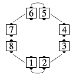
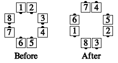
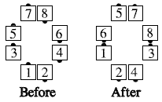
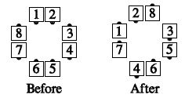
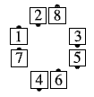

An "O" is a column formation with the centers spread apart (2 spaces between them). Any call that can be done from General Columns (Columns, Double Pass Thru, etc.), and which ends in General Lines or General Columns, can be done from "O" Formation.
O Circulate
From an O: Each dancer moves forward one spot along the circulate path shown below:

Other O Calls
Any call which can be done from
General Columns (Columns, Double Pass Thru, etc.), and which ends in
General Lines or General Columns, can be
done from an O. The dancers act as though the centers
were close together; however, they end on the same 8 spots
on the floor. For example, "O Double Pass
Thru":



But can't O Swing Thru from here:

That last one is an O Magic Column. There is no such thing as an "O Wave". In order for O Swing Thru to work the General Column must be an Eight Chain Thru formation.
The effect of an O call is exactly the same as having the centers slide together, doing the call, and having the new centers slide apart so that the original 8 spots on the floor are again occupied.
Common applications include Circulate, Split Circulate, and Walk and Dodge.
© Copyright 1983, 1986-1988, 1995-2017 Bill Davis, John Sybalsky and CALLERLAB Inc., The International Association of Square Dance Callers. Permission to reprint, republish, and create derivative works without royalty is hereby granted, provided this notice appears. Publication on the Internet of derivative works without royalty is hereby granted provided this notice appears. Permission to quote parts or all of this document without royalty is hereby granted, provided this notice is included. Information contained herein shall not be changed nor revised in any derivation or publication.